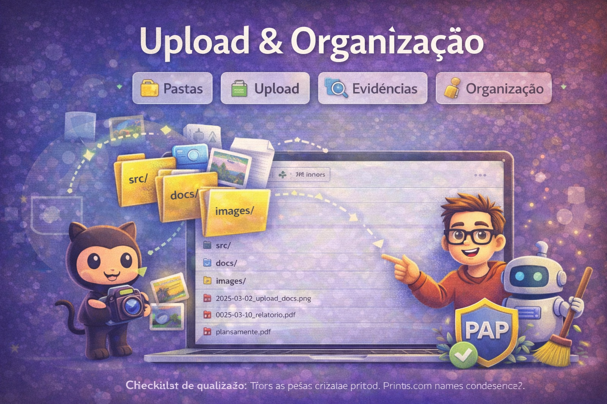
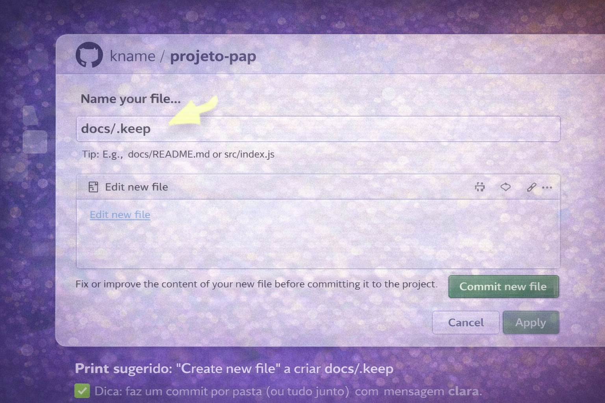
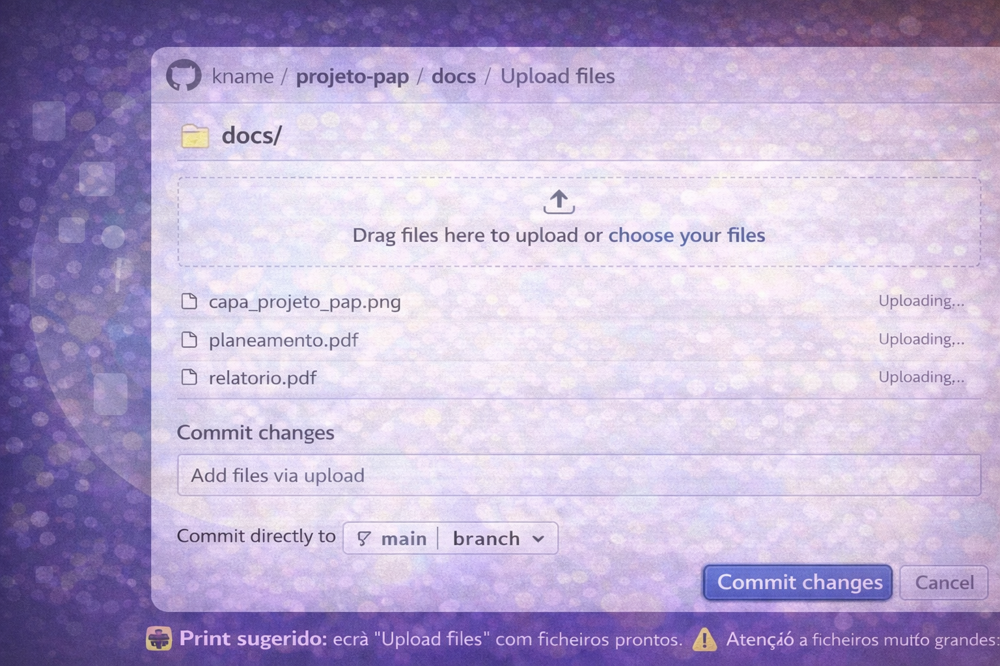
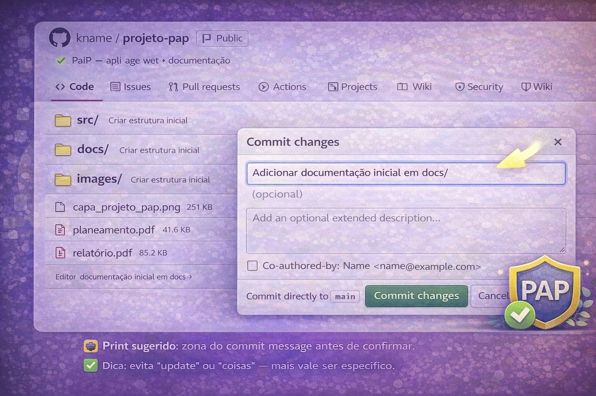
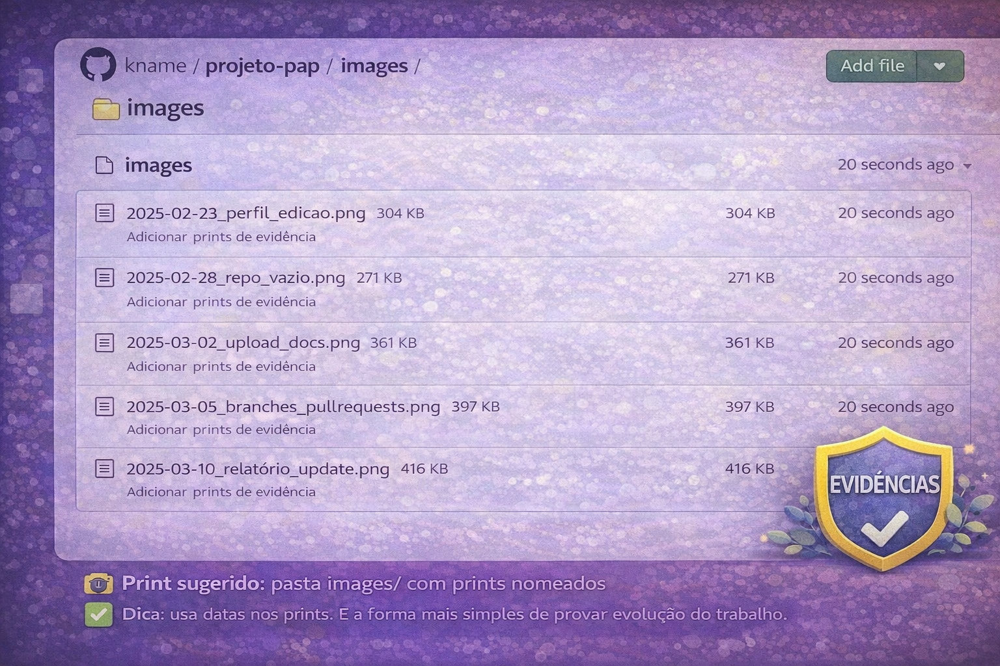

Nesta página vais criar uma estrutura organizada e fazer upload de ficheiros no GitHub.
Para uma PAP, isto é essencial: facilita a avaliação, evita “pastas caóticas” e deixa evidências claras do trabalho.
O objetivo é que qualquer pessoa consiga abrir o teu repositório e perceber rapidamente:
onde está o código, onde está a documentação e onde estão as evidências.
📁 Pastas⬆️ Upload🧾 Evidências🧼 Organização

Regras simples (para manter o repositório limpo)
Estas regras evitam 90% dos erros de organização.
Um sítio para cada tipo de ficheiro: código em src/, docs em docs/, evidências em images/.
Nomes consistentes: usa datas e descrições curtas (ex.: 2025-02-12_planeamento.pdf).
Evita duplicados: não faças final_final_v3.pdf. Usa versões por data.
Não publiques dados pessoais: tapa informação sensível antes de colocar prints.
Sugestão de padrão para prints: YYYY-MM-DD_topico_descricao.png (ex.: 2025-03-02_upload_docs.png).
Estrutura recomendada
Simples, eficiente e perfeita para projetos com documentação + evidências.
Estrutura base
src/ (código do projeto)
docs/ (documentação: relatório, planeamento, anexos)
images/ (prints, imagens do projeto, evidências)
No GitHub (web), crias pastas ao criar um ficheiro com caminho.
Ex.: Add file → Create new file e escrever docs/README.md cria automaticamente a pasta docs/.
Passos
Segue por ordem. No fim, o teu repositório fica pronto para receber tudo sem confusão.
1
Criar as pastas no repositório
Cria src/, docs/ e images/ (mesmo que ainda estejam vazias).
Forma rápida (web): cria um ficheiro “placeholder” em cada pasta:
src/.keep
docs/.keep
images/.keep
Podes apagar os .keep quando já existirem ficheiros reais.
📸 Print sugerido: “Create new file” a criar docs/.keep

✅ Dica: faz um commit por pasta (ou tudo junto) com mensagem clara.
2
Fazer upload (forma correta)
Add file → Upload files (ou arrastar e largar) e confirmar no fim.
Sugestão de destino:
Relatórios / PDFs:docs/
Prints e evidências:images/
Código / ficheiros do projeto:src/
⚠️ Atenção a ficheiros muito grandes: se um ficheiro não fizer upload, reduz o tamanho (ex.: comprimir PDF/imagem).
📸 Print sugerido: ecrã “Upload files” com ficheiros prontos

📸 Print sugerido: lista de ficheiros/pastas após upload
3
Mensagem de commit clara
O commit deve dizer exatamente o que foi adicionado/alterado.
Criar estrutura inicial (src/docs/images)
Adicionar documentação inicial em docs/
Adicionar prints de evidência em images/
Atualizar relatório (versão 2025-03-10)
Organizar ficheiros e corrigir nomes
📸 Print sugerido: zona do commit message antes de confirmar

✅ Dica: evita “update” ou “coisas” — mais vale ser específico.
4
Organização de evidências (prints)
Uma pasta de evidências bem organizada vale ouro na PAP.
Sugestão de subpastas (opcional):
images/evidencias/ (prints de trabalho)
images/ui/ (imagens do protótipo/interface)
images/diagramas/ (esquemas, fluxogramas)
Sugestão: cria um ficheiro docs/evidencias.md com links para as imagens mais importantes (tipo índice).
📸 Print sugerido: pasta images/ com prints nomeados

✅ Dica: usa datas nos prints. É a forma mais simples de provar evolução do trabalho.
Próximo passo
Quando o repositório já estiver organizado, o passo seguinte é trabalhar com segurança:
branches para alterações e Pull Requests para integrar mudanças.